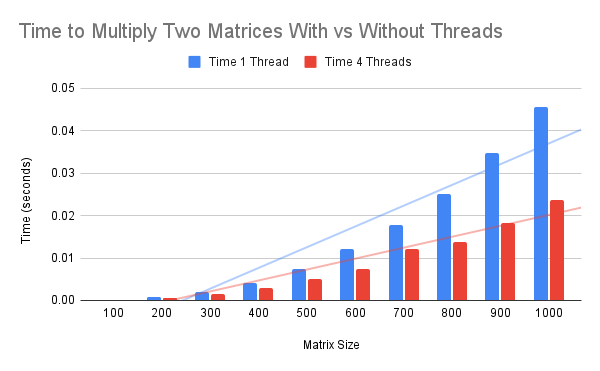
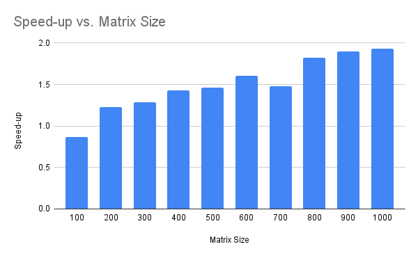
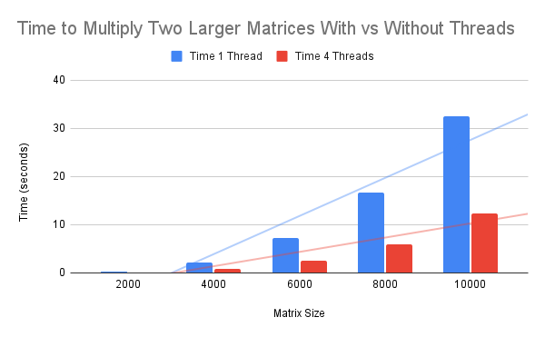

Numpy Multithreaded Matrix Multiplication Scales With Size
Multithreaded matrix multiplication in numpy is faster than single-threaded matrix multiplication.
The speed-up factor can range from slightly above 1.2x to nearly 3x, depending on the size of the matrices that are being multiplied. It is possible that multiplying smaller matrices, such as 100x100 or smaller may result in worse performance when using threads.
In this tutorial, you will discover how to benchmark numpy multithreaded matrix multiplication.
Let's get started.
Numpy Matrix Multiplication is Multithreaded
NumPy is an array library in Python.
NumPy supports many linear algebra functions with vectors and arrays by calling into efficient third-party libraries such as BLAS and LAPACK.
BLAS and LAPACK are specifications for efficient vector, matrix, and linear algebra operations that are implemented using third-party libraries, such as MKL and OpenBLAS. Some operations in these libraries, such as matrix multiplication, are multithreaded.
You can learn more about NumPy and BLAS in the tutorial:
How Does Multithreaded Matrix Multiplication Compare
Matrix multiplication is a central task in linear algebra.
Given that numpy supports multithreaded matrix multiplication via an installed BLAS library, we may be curious about the sped benefits it offers.
For example, how much more efficient is multithreaded matrix multiplication compared to single-threaded matrix multiplication, at least with modestly sized matrices?
Is matrix multiplication always multithreaded or are threads only used with matrices above a certain size?
We can explore these questions by benchmarking matrix multiplication with differently sized matrices firstly without threads, then with threads, then comparing the results.
Benchmark Single Threaded Matrix Multiplication
We can benchmark how long it takes to multiply modestly sized matrices using a single thread.
This can be achieved by configuring the installed BLAS library to use a single thread. We can implement this by setting an environment variable prior to loading the numpy library, either as an environment variable or within our code via the os.environ() function.
For example, the following will configure BLAS/LAPACK to use a single thread on most systems:
...
from os import environ
environ['OMP_NUM_THREADS'] = '1'You can learn more about configuring the number of threads used by BLAS and LAPACK in the tutorial:
We can define a task that benchmarks matrix multiplication for a matrix of a given size.
The task will first create two matrices of a given size filled with random floating point values. These are then multiplied together using the dot() method on the numpy array object. The start time is recorded before the operation and the end time at the end of the operation so that the duration can be calculated.
This task is then repeated a fixed number of times, such as 30, then the average result is reported. We repeat the experiments many times and report the average to overcome randomness in the experiment.
The task() function below implements this, taking a matrix size as an argument and returning the average time taken to multiply two square matrices of the given size.
# multiply two matrices and report how long it takes
def task(n, repeats=30):
results = list()
for _ in range(repeats):
# record start time
start = time()
# create an array of random values
data1 = rand(n, n)
data2 = rand(n, n)
# matrix multiplication
result = data1.dot(data2)
# calculate the duration in seconds
duration = time() - start
# store result
results.append(duration)
# return the average
return sum(results) / repeats
We can then perform this task to benchmark matrices of different sizes.
In this case, we will benchmark 10 matrix sizes from 100x100 to 1000x1000 and report the time of each.
We will focus on these smaller-sized matrices because we want to know if multiplying small matrices is multithreaded and because the small sizes mean that the experiment will be completed in a reasonable time on all systems.
...
# report time of matrix multiplication for each matrix size
for size in range(100,1100,100):
# perform task and record time
result = task(size)
# report result
print(f'{size} took {result:.6f} seconds')
Tying this together, the complete example is listed below.
# benchmark of single threaded matrix multiplication
from os import environ
environ['OMP_NUM_THREADS'] = '1'
from time import time
from numpy.random import rand
# multiply two matrices and report how long it takes
def task(n, repeats=30):
results = list()
for _ in range(repeats):
# record start time
start = time()
# create an array of random values
data1 = rand(n, n)
data2 = rand(n, n)
# matrix multiplication
result = data1.dot(data2)
# calculate the duration in seconds
duration = time() - start
# store result
results.append(duration)
# return the average
return sum(results) / repeats
# report time of matrix multiplication for each matrix size
for size in range(100,1100,100):
# perform task and record time
result = task(size)
# report result
print(f'{size} took {result:.6f} seconds')
Running the example reports the average time taken in seconds to multiply matrices together of different sizes.
We can see that all sizes are completed in under one second on average when using a single thread.
100 took 0.000162 seconds
200 took 0.000790 seconds
300 took 0.002046 seconds
400 took 0.004076 seconds
500 took 0.007471 seconds
600 took 0.012077 seconds
700 took 0.017839 seconds
800 took 0.025071 seconds
900 took 0.034799 seconds
1000 took 0.045507 seconds
Next, let's complete the same experiment using multiple threads.
Benchmark Multithreaded Matrix Multiplication
We can benchmark matrix multiplication using multiple threads.
This can be achieved by configuring the number of BLAS threads to be equal to the number of physical CPUs in the system.
I have 4 physical CPUs in my system therefore, I will configure BLAS to use 4 CPUs. Update the configuration to match the number of physical CPUs in your system.
...
from os import environ
environ['OMP_NUM_THREADS'] = '4'We could just remove these two lines and use multithreaded BLAS with the default number of CPUs. I prefer not to do this as I often see better performance when configuring the number of CPUs manually on my system.
You can learn more about configuring the number of CPUs used by numpy and BLAS in the tutorial:
The complete example with this change is listed below.
# benchmark of multithreaded matrix multiplication
from os import environ
environ['OMP_NUM_THREADS'] = '4'
from time import time
from numpy.random import rand
# multiply two matrices and report how long it takes
def task(n, repeats=30):
results = list()
for _ in range(repeats):
# record start time
start = time()
# create an array of random values
data1 = rand(n, n)
data2 = rand(n, n)
# matrix multiplication
result = data1.dot(data2)
# calculate the duration in seconds
duration = time() - start
# store result
results.append(duration)
# return the average
return sum(results) / repeats
# report time of matrix multiplication for each matrix size
for size in range(100,1100,100):
# perform task and record time
result = task(size)
# report result
print(f'{size} took {result:.6f} seconds')
Running the example reports the average time taken in seconds to multiple matrices of different sizes, this time using 4 worker threads.
Again, each matrix size is less than one second.
100 took 0.000186 seconds
200 took 0.000644 seconds
300 took 0.001593 seconds
400 took 0.002850 seconds
500 took 0.005116 seconds
600 took 0.007525 seconds
700 took 0.012027 seconds
800 took 0.013756 seconds
900 took 0.018327 seconds
1000 took 0.023593 seconds
Next, let's compare the results of single vs multithreaded matrix multiplication in numpy using BLAS.
Comparison of Multithreaded Matrix Multiplication Results
We can now compare the results of single vs multithreaded matrix multiplication with different modestly sized matrices.
The table below summarizes the average time taken to multiply each matrix size using one and four threads.
Matrix Size Time 1 Thread Time 4 Threads
100 0.000162 0.000186
200 0.00079 0.000644
300 0.002046 0.001593
400 0.004076 0.00285
500 0.007471 0.005116
600 0.012077 0.007525
700 0.017839 0.012027
800 0.025071 0.013756
900 0.034799 0.018327
1000 0.045507 0.023593
The plot below summarizes the data, comparing the average time taken with both one and four threads.

We can see that in all but the first matrix size, the multithreaded example was faster than the single-threaded example.
The results suggest that multithreading may always be used for matrix multiplication if enabled. At least for matrices of 100x100 in size and above.
The slightly slower average time taken for a 100x100 matrix suggests that multithreading hurts performance in this case, rather than helps it.
We can compare the results directly.
Firstly, we can subtract the multithreaded time from the single-threaded time to give the average difference in time.
Secondly, we can divide the multithreaded time by the single-threaded time to give a speed-up factor.
The table below summarizes the results.
Matrix Size Time 1 Thread Time 4 Threads Difference Speed-up
100 0.000162 0.000186 -0.000024 0.8709677419
200 0.00079 0.000644 0.000146 1.226708075
300 0.002046 0.001593 0.000453 1.284369115
400 0.004076 0.00285 0.001226 1.430175439
500 0.007471 0.005116 0.002355 1.460320563
600 0.012077 0.007525 0.004552 1.604916944
700 0.017839 0.012027 0.005812 1.48324603
800 0.025071 0.013756 0.011315 1.82255016
900 0.034799 0.018327 0.016472 1.898783216
1000 0.045507 0.023593 0.021914 1.928834824
The plot below summarizes the speed-up of the multithreaded version over the single-threaded version for each matrix size.

The plot shows that the smaller matrices approach a 1.5x speed-up whereas the larger matrices approach a 2x speed-up.
We can see a clear trend of an increasing speed-up factor with matrix size.
I suspect that this trend will continue. That is, a larger speed-up factor will be observed as the matrix size is increased. At least to a point where matrices are too large to fit in a specific CPU cache or main memory.
In fact, we can extend the experiment to larger matrices and observe the trend.
The table below summarizes results from multiplying 2,000x2,000 matrices up to 10,000x10,000 matrices, stepped up in increments of 2,000.
Matrix Size Time 1 Thread Time 4 Threads Difference Speed-up
2000 0.294893 0.121557 0.173336 2.425964774
4000 2.21648 0.804028 1.412452 2.756719915
6000 7.24536 2.548271 4.697089 2.843245479
8000 16.703071 5.912314 10.790757 2.825132596
10000 32.542176 12.38683 20.155346 2.62715933The plot below summarizes the results.

We can see from the table that in all cases tested, the multithreaded version is more than 2x faster than the single-threaded version.
The trend does increase with matrix size, although it is perhaps leveling out or even reversing as we reach 10,000x10,000 matrices.
Takeaways
You now know how to benchmark numpy multithreaded matrix multiplication.